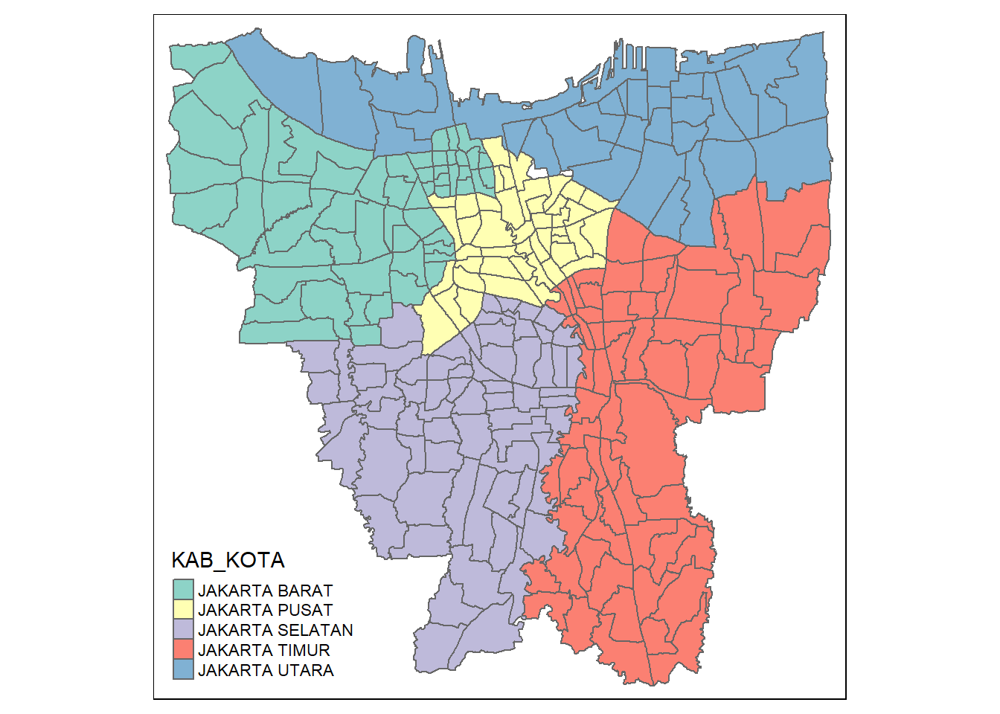
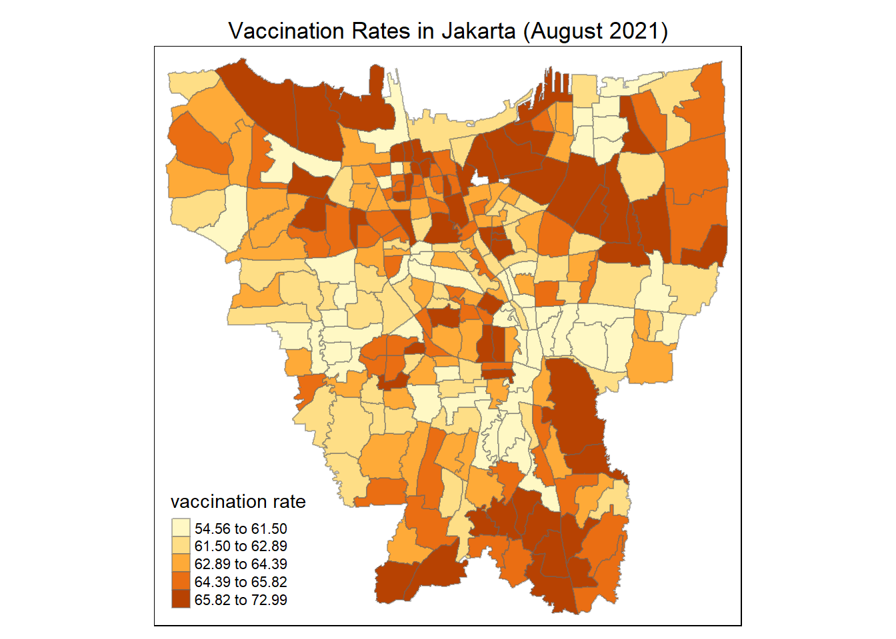
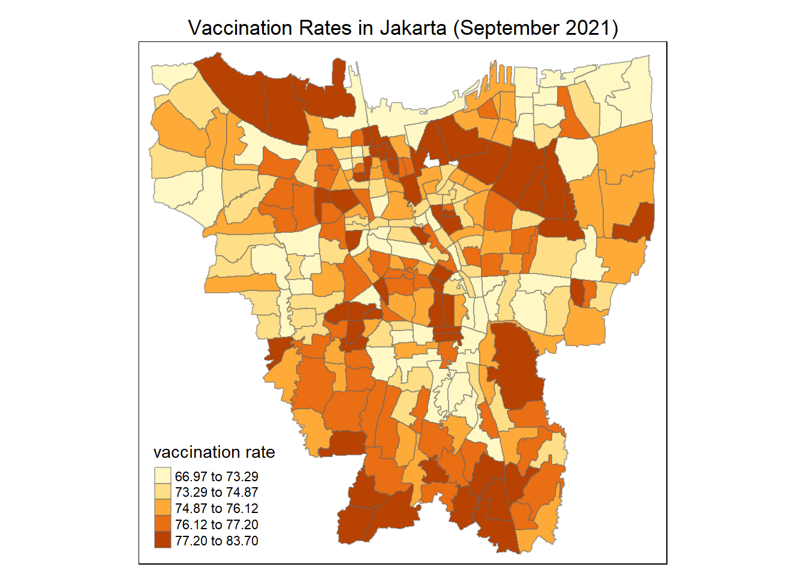
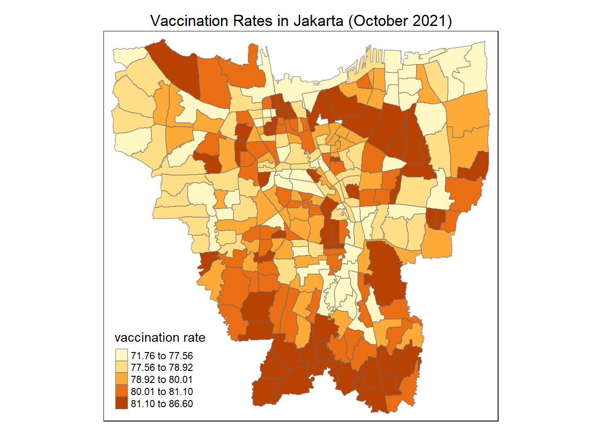

Take-home Exercise 2
Only import first or last of the month
A rukun tetangga (abbrievated RT, literally “pillar of neighbours”) is an administrative division of a village in Indonesia, under a rukun warga. The RT is the lowest administrative division of Indonesia.
use lesson 6
use hot and cold spots
1 R Packages
2 Importing
2.1 Aspatial Dataset
jul2021 <- read_excel("data/aspatial/Data Vaksinasi Berbasis Kelurahan (31 Juli 2021).xlsx", sheet = "Data Kelurahan")
jul2021["Date"] <- "2021-07-00"
head(jul2021, 5)# A tibble: 5 × 28
KODE KELURAH…¹ WILAY…² KECAM…³ KELUR…⁴ SASARAN BELUM…⁵ JUMLA…⁶ JUMLA…⁷ TOTAL…⁸
<chr> <chr> <chr> <chr> <dbl> <dbl> <dbl> <dbl> <dbl>
1 <NA> <NA> <NA> TOTAL 8941211 4441501 4499710 1663218 6162928
2 3172051003 JAKART… PADEMA… ANCOL 23947 12333 11614 4181 15795
3 3173041007 JAKART… TAMBORA ANGKE 29381 13875 15506 4798 20304
4 3175041005 JAKART… KRAMAT… BALE K… 29074 18314 10760 3658 14418
5 3175031003 JAKART… JATINE… BALI M… 9752 5173 4579 2007 6586
# … with 19 more variables: `LANSIA\r\nDOSIS 1` <dbl>,
# `LANSIA\r\nDOSIS 2` <dbl>, `LANSIA TOTAL \r\nVAKSIN DIBERIKAN` <dbl>,
# `PELAYAN PUBLIK\r\nDOSIS 1` <dbl>, `PELAYAN PUBLIK\r\nDOSIS 2` <dbl>,
# `PELAYAN PUBLIK TOTAL\r\nVAKSIN DIBERIKAN` <dbl>,
# `GOTONG ROYONG\r\nDOSIS 1` <dbl>, `GOTONG ROYONG\r\nDOSIS 2` <dbl>,
# `GOTONG ROYONG TOTAL\r\nVAKSIN DIBERIKAN` <dbl>,
# `TENAGA KESEHATAN\r\nDOSIS 1` <dbl>, `TENAGA KESEHATAN\r\nDOSIS 2` <dbl>, …aug2021 <- read_excel("data/aspatial/Data Vaksinasi Berbasis Kelurahan (31 Agustus 2021).xlsx", sheet = "Data Kelurahan")
aug2021["Date"] <- "2021-08-00"
head(aug2021, 5)# A tibble: 5 × 28
KODE KELURAH…¹ WILAY…² KECAM…³ KELUR…⁴ SASARAN BELUM…⁵ JUMLA…⁶ JUMLA…⁷ TOTAL…⁸
<chr> <chr> <chr> <chr> <dbl> <dbl> <dbl> <dbl> <dbl>
1 <NA> <NA> <NA> TOTAL 8941211 3277484 5663727 3412906 9076633
2 3172051003 JAKART… PADEMA… ANCOL 23947 9191 14756 8935 23691
3 3173041007 JAKART… TAMBORA ANGKE 29381 10400 18981 10470 29451
4 3175041005 JAKART… KRAMAT… BALE K… 29074 12510 16564 7766 24330
5 3175031003 JAKART… JATINE… BALI M… 9752 3704 6048 3671 9719
# … with 19 more variables: `LANSIA\r\nDOSIS 1` <dbl>,
# `LANSIA\r\nDOSIS 2` <dbl>, `LANSIA TOTAL \r\nVAKSIN DIBERIKAN` <dbl>,
# `PELAYAN PUBLIK\r\nDOSIS 1` <dbl>, `PELAYAN PUBLIK\r\nDOSIS 2` <dbl>,
# `PELAYAN PUBLIK TOTAL\r\nVAKSIN DIBERIKAN` <dbl>,
# `GOTONG ROYONG\r\nDOSIS 1` <dbl>, `GOTONG ROYONG\r\nDOSIS 2` <dbl>,
# `GOTONG ROYONG TOTAL\r\nVAKSIN DIBERIKAN` <dbl>,
# `TENAGA KESEHATAN\r\nDOSIS 1` <dbl>, `TENAGA KESEHATAN\r\nDOSIS 2` <dbl>, …sep2021 <- read_excel("data/aspatial/Data Vaksinasi Berbasis Kelurahan (30 September 2021).xlsx", sheet = "Data Kelurahan")
sep2021["Date"] <- "2021-09-00"
head(sep2021, 5)# A tibble: 5 × 28
KODE KELURAH…¹ WILAY…² KECAM…³ KELUR…⁴ SASARAN BELUM…⁵ JUMLA…⁶ JUMLA…⁷ TOTAL…⁸
<chr> <chr> <chr> <chr> <dbl> <dbl> <dbl> <dbl> <dbl>
1 <NA> <NA> <NA> TOTAL 8941211 2235772 6705439 5171697 1.19e7
2 3172051003 JAKART… PADEMA… ANCOL 23947 6688 17259 13376 3.06e4
3 3173041007 JAKART… TAMBORA ANGKE 29381 7581 21800 16438 3.82e4
4 3175041005 JAKART… KRAMAT… BALE K… 29074 8708 20366 14412 3.48e4
5 3175031003 JAKART… JATINE… BALI M… 9752 2517 7235 5660 1.29e4
# … with 19 more variables: `LANSIA\r\nDOSIS 1` <dbl>,
# `LANSIA\r\nDOSIS 2` <dbl>, `LANSIA TOTAL \r\nVAKSIN DIBERIKAN` <dbl>,
# `PELAYAN PUBLIK\r\nDOSIS 1` <dbl>, `PELAYAN PUBLIK\r\nDOSIS 2` <dbl>,
# `PELAYAN PUBLIK TOTAL\r\nVAKSIN DIBERIKAN` <dbl>,
# `GOTONG ROYONG\r\nDOSIS 1` <dbl>, `GOTONG ROYONG\r\nDOSIS 2` <dbl>,
# `GOTONG ROYONG TOTAL\r\nVAKSIN DIBERIKAN` <dbl>,
# `TENAGA KESEHATAN\r\nDOSIS 1` <dbl>, `TENAGA KESEHATAN\r\nDOSIS 2` <dbl>, …oct2021 <- read_excel("data/aspatial/Data Vaksinasi Berbasis Kelurahan (31 Oktober 2021).xlsx", sheet = "Data Kelurahan")
oct2021["Date"] <- "2021-10-00"
head(oct2021, 5)# A tibble: 5 × 28
KODE KELURAH…¹ WILAY…² KECAM…³ KELUR…⁴ SASARAN BELUM…⁵ JUMLA…⁶ JUMLA…⁷ TOTAL…⁸
<chr> <chr> <chr> <chr> <dbl> <dbl> <dbl> <dbl> <dbl>
1 <NA> <NA> <NA> TOTAL 8941211 1880524 7060687 5729001 1.28e7
2 3172051003 JAKART… PADEMA… ANCOL 23947 5991 17956 14504 3.25e4
3 3173041007 JAKART… TAMBORA ANGKE 29381 6557 22824 18185 4.10e4
4 3175041005 JAKART… KRAMAT… BALE K… 29074 7586 21488 16444 3.79e4
5 3175031003 JAKART… JATINE… BALI M… 9752 2125 7627 6277 1.39e4
# … with 19 more variables: `LANSIA\r\nDOSIS 1` <dbl>,
# `LANSIA\r\nDOSIS 2` <dbl>, `LANSIA TOTAL \r\nVAKSIN DIBERIKAN` <dbl>,
# `PELAYAN PUBLIK\r\nDOSIS 1` <dbl>, `PELAYAN PUBLIK\r\nDOSIS 2` <dbl>,
# `PELAYAN PUBLIK TOTAL\r\nVAKSIN DIBERIKAN` <dbl>,
# `GOTONG ROYONG\r\nDOSIS 1` <dbl>, `GOTONG ROYONG\r\nDOSIS 2` <dbl>,
# `GOTONG ROYONG TOTAL\r\nVAKSIN DIBERIKAN` <dbl>,
# `TENAGA KESEHATAN\r\nDOSIS 1` <dbl>, `TENAGA KESEHATAN\r\nDOSIS 2` <dbl>, …nov2021 <- read_excel("data/aspatial/Data Vaksinasi Berbasis Kelurahan (30 November 2021).xlsx", sheet = "Data Kelurahan")
nov2021["Date"] <- "2021-11-00"
head(nov2021, 5)# A tibble: 5 × 28
KODE KELURAH…¹ WILAY…² KECAM…³ KELUR…⁴ SASARAN BELUM…⁵ JUMLA…⁶ JUMLA…⁷ TOTAL…⁸
<chr> <chr> <chr> <chr> <dbl> <dbl> <dbl> <dbl> <dbl>
1 <NA> <NA> <NA> TOTAL 8941211 1723821 7217390 6172636 1.34e7
2 3172051003 JAKART… PADEMA… ANCOL 23947 5527 18420 15466 3.39e4
3 3173041007 JAKART… TAMBORA ANGKE 29381 5986 23395 19404 4.28e4
4 3175041005 JAKART… KRAMAT… BALE K… 29074 6802 22272 18084 4.04e4
5 3175031003 JAKART… JATINE… BALI M… 9752 1920 7832 6773 1.46e4
# … with 19 more variables: `LANSIA\r\nDOSIS 1` <dbl>,
# `LANSIA\r\nDOSIS 2` <dbl>, `LANSIA TOTAL \r\nVAKSIN DIBERIKAN` <dbl>,
# `PELAYAN PUBLIK\r\nDOSIS 1` <dbl>, `PELAYAN PUBLIK\r\nDOSIS 2` <dbl>,
# `PELAYAN PUBLIK TOTAL\r\nVAKSIN DIBERIKAN` <dbl>,
# `GOTONG ROYONG\r\nDOSIS 1` <dbl>, `GOTONG ROYONG\r\nDOSIS 2` <dbl>,
# `GOTONG ROYONG TOTAL\r\nVAKSIN DIBERIKAN` <dbl>,
# `TENAGA KESEHATAN\r\nDOSIS 1` <dbl>, `TENAGA KESEHATAN\r\nDOSIS 2` <dbl>, …dec2021 <- read_excel("data/aspatial/Data Vaksinasi Berbasis Kelurahan (31 Desember 2021).xlsx", sheet = "Data Kelurahan")
dec2021["Date"] <- "2021-12-00"
head(dec2021, 5)# A tibble: 5 × 28
KODE KELURAH…¹ WILAY…² KECAM…³ KELUR…⁴ SASARAN BELUM…⁵ JUMLA…⁶ JUMLA…⁷ TOTAL…⁸
<chr> <chr> <chr> <chr> <dbl> <dbl> <dbl> <dbl> <dbl>
1 <NA> <NA> <NA> TOTAL 8941211 1623736 7317475 6370175 1.37e7
2 3172051003 JAKART… PADEMA… ANCOL 23947 5062 18885 15996 3.49e4
3 3173041007 JAKART… TAMBORA ANGKE 29381 5626 23755 20026 4.38e4
4 3175041005 JAKART… KRAMAT… BALE K… 29074 6335 22739 18925 4.17e4
5 3175031003 JAKART… JATINE… BALI M… 9752 1782 7970 7003 1.50e4
# … with 19 more variables: `LANSIA\r\nDOSIS 1` <dbl>,
# `LANSIA\r\nDOSIS 2` <dbl>, `LANSIA TOTAL \r\nVAKSIN DIBERIKAN` <dbl>,
# `PELAYAN PUBLIK\r\nDOSIS 1` <dbl>, `PELAYAN PUBLIK\r\nDOSIS 2` <dbl>,
# `PELAYAN PUBLIK TOTAL\r\nVAKSIN DIBERIKAN` <dbl>,
# `GOTONG ROYONG\r\nDOSIS 1` <dbl>, `GOTONG ROYONG\r\nDOSIS 2` <dbl>,
# `GOTONG ROYONG TOTAL\r\nVAKSIN DIBERIKAN` <dbl>,
# `TENAGA KESEHATAN\r\nDOSIS 1` <dbl>, `TENAGA KESEHATAN\r\nDOSIS 2` <dbl>, …jan2022 <- read_excel("data/aspatial/Data Vaksinasi Berbasis Kelurahan (31 Januari 2022).xlsx", sheet = "Data Kelurahan")
jan2022["Date"] <- "2022-01-00"
head(jan2022, 5)# A tibble: 5 × 28
KODE KELURAH…¹ WILAY…² KECAM…³ KELUR…⁴ SASARAN BELUM…⁵ JUMLA…⁶ JUMLA…⁷ TOTAL…⁸
<chr> <chr> <chr> <chr> <dbl> <dbl> <dbl> <dbl> <dbl>
1 <NA> <NA> <NA> TOTAL 8941211 1538221 7402990 6516678 1.39e7
2 3172051003 JAKART… PADEMA… ANCOL 23947 4647 19300 16477 3.58e4
3 3173041007 JAKART… TAMBORA ANGKE 29381 5388 23993 20463 4.45e4
4 3175041005 JAKART… KRAMAT… BALE K… 29074 5967 23107 19468 4.26e4
5 3175031003 JAKART… JATINE… BALI M… 9752 1678 8074 7176 1.52e4
# … with 19 more variables: `LANSIA\r\nDOSIS 1` <dbl>,
# `LANSIA\r\nDOSIS 2` <dbl>, `LANSIA TOTAL \r\nVAKSIN DIBERIKAN` <dbl>,
# `PELAYAN PUBLIK\r\nDOSIS 1` <dbl>, `PELAYAN PUBLIK\r\nDOSIS 2` <dbl>,
# `PELAYAN PUBLIK TOTAL\r\nVAKSIN DIBERIKAN` <dbl>,
# `GOTONG ROYONG\r\nDOSIS 1` <dbl>, `GOTONG ROYONG\r\nDOSIS 2` <dbl>,
# `GOTONG ROYONG TOTAL\r\nVAKSIN DIBERIKAN` <dbl>,
# `TENAGA KESEHATAN\r\nDOSIS 1` <dbl>, `TENAGA KESEHATAN\r\nDOSIS 2` <dbl>, …feb2022 <- read_excel("data/aspatial/Data Vaksinasi Berbasis Kelurahan (27 Februari 2022).xlsx", sheet = "Data Kelurahan")
feb2022["Date"] <- "2022-02-00"
head(feb2022, 5)# A tibble: 5 × 28
KODE KELURAH…¹ WILAY…² KECAM…³ KELUR…⁴ SASARAN BELUM…⁵ JUMLA…⁶ JUMLA…⁷ TOTAL…⁸
<chr> <chr> <chr> <chr> <dbl> <dbl> <dbl> <dbl> <dbl>
1 <NA> <NA> <NA> TOTAL 8941211 1517196 7424015 6590380 1.40e7
2 3172051003 JAKART… PADEMA… ANCOL 23947 4592 19355 16687 3.60e4
3 3173041007 JAKART… TAMBORA ANGKE 29381 5319 24062 20738 4.48e4
4 3175041005 JAKART… KRAMAT… BALE K… 29074 5903 23171 19754 4.29e4
5 3175031003 JAKART… JATINE… BALI M… 9752 1649 8103 7245 1.53e4
# … with 19 more variables: `LANSIA\r\nDOSIS 1` <dbl>,
# `LANSIA\r\nDOSIS 2` <dbl>, `LANSIA TOTAL \r\nVAKSIN DIBERIKAN` <dbl>,
# `PELAYAN PUBLIK\r\nDOSIS 1` <dbl>, `PELAYAN PUBLIK\r\nDOSIS 2` <dbl>,
# `PELAYAN PUBLIK TOTAL\r\nVAKSIN DIBERIKAN` <dbl>,
# `GOTONG ROYONG\r\nDOSIS 1` <dbl>, `GOTONG ROYONG\r\nDOSIS 2` <dbl>,
# `GOTONG ROYONG TOTAL\r\nVAKSIN DIBERIKAN` <dbl>,
# `TENAGA KESEHATAN\r\nDOSIS 1` <dbl>, `TENAGA KESEHATAN\r\nDOSIS 2` <dbl>, …mar2022 <- read_excel("data/aspatial/Data Vaksinasi Berbasis Kelurahan (31 Maret 2022).xlsx", sheet = "Data Kelurahan")
mar2022["Date"] <- "2022-03-00"
head(mar2022, 5)# A tibble: 5 × 35
KODE KELURAH…¹ WILAY…² KECAM…³ KELUR…⁴ SASARAN BELUM…⁵ JUMLA…⁶ JUMLA…⁷ JUMLA…⁸
<chr> <chr> <chr> <chr> <dbl> <dbl> <dbl> <dbl> <dbl>
1 <NA> <NA> <NA> TOTAL 8941211 1482471 7458740 6682911 1836511
2 3172051003 JAKART… PADEMA… ANCOL 23947 4522 19425 16909 3934
3 3173041007 JAKART… TAMBORA ANGKE 29381 5186 24195 21000 6122
4 3175041005 JAKART… KRAMAT… BALE K… 29074 5780 23294 20123 4124
5 3175031003 JAKART… JATINE… BALI M… 9752 1621 8131 7332 2159
# … with 26 more variables: `TOTAL VAKSIN\r\nDIBERIKAN` <dbl>,
# `LANSIA\r\nDOSIS 1` <dbl>, `LANSIA\r\nDOSIS 2` <dbl>,
# `LANSIA\r\nDOSIS 3` <dbl>, `LANSIA TOTAL \r\nVAKSIN DIBERIKAN` <dbl>,
# `PELAYAN PUBLIK\r\nDOSIS 1` <dbl>, `PELAYAN PUBLIK\r\nDOSIS 2` <dbl>,
# `PELAYAN PUBLIK\r\nDOSIS 3` <dbl>,
# `PELAYAN PUBLIK TOTAL\r\nVAKSIN DIBERIKAN` <dbl>,
# `GOTONG ROYONG\r\nDOSIS 1` <dbl>, `GOTONG ROYONG\r\nDOSIS 2` <dbl>, …apr2022 <- read_excel("data/aspatial/Data Vaksinasi Berbasis Kelurahan (30 April 2022).xlsx", sheet = "Data Kelurahan")
apr2022["Date"] <- "2022-04-00"
head(apr2022, 5)# A tibble: 5 × 35
KODE KELURAH…¹ WILAY…² KECAM…³ KELUR…⁴ SASARAN BELUM…⁵ JUMLA…⁶ JUMLA…⁷ JUMLA…⁸
<chr> <chr> <chr> <chr> <dbl> <dbl> <dbl> <dbl> <dbl>
1 <NA> <NA> <NA> TOTAL 8941211 1453423 7487788 6727002 2720796
2 3172051003 JAKART… PADEMA… ANCOL 23947 4449 19498 17027 6568
3 3173041007 JAKART… TAMBORA ANGKE 29381 5101 24280 21134 8915
4 3175041005 JAKART… KRAMAT… BALE K… 29074 5699 23375 20315 6491
5 3175031003 JAKART… JATINE… BALI M… 9752 1598 8154 7395 3225
# … with 26 more variables: `TOTAL VAKSIN\r\nDIBERIKAN` <dbl>,
# `LANSIA\r\nDOSIS 1` <dbl>, `LANSIA\r\nDOSIS 2` <dbl>,
# `LANSIA\r\nDOSIS 3` <dbl>, `LANSIA TOTAL \r\nVAKSIN DIBERIKAN` <dbl>,
# `PELAYAN PUBLIK\r\nDOSIS 1` <dbl>, `PELAYAN PUBLIK\r\nDOSIS 2` <dbl>,
# `PELAYAN PUBLIK\r\nDOSIS 3` <dbl>,
# `PELAYAN PUBLIK TOTAL\r\nVAKSIN DIBERIKAN` <dbl>,
# `GOTONG ROYONG\r\nDOSIS 1` <dbl>, `GOTONG ROYONG\r\nDOSIS 2` <dbl>, …may2022 <- read_excel("data/aspatial/Data Vaksinasi Berbasis Kelurahan (31 Mei 2022).xlsx", sheet = "Data Kelurahan")
may2022["Date"] <- "2022-05-00"
head(may2022, 5)# A tibble: 5 × 35
KODE KELURAH…¹ WILAY…² KECAM…³ KELUR…⁴ SASARAN BELUM…⁵ JUMLA…⁶ JUMLA…⁷ JUMLA…⁸
<chr> <chr> <chr> <chr> <dbl> <dbl> <dbl> <dbl> <dbl>
1 <NA> <NA> <NA> TOTAL 8941211 1445540 7495671 6743764 2885301
2 3172051003 JAKART… PADEMA… ANCOL 23947 4440 19507 17077 7022
3 3173041007 JAKART… TAMBORA ANGKE 29381 5084 24297 21182 9484
4 3175041005 JAKART… KRAMAT… BALE K… 29074 5676 23398 20373 7030
5 3175031003 JAKART… JATINE… BALI M… 9752 1589 8163 7413 3413
# … with 26 more variables: `TOTAL VAKSIN\r\nDIBERIKAN` <dbl>,
# `LANSIA\r\nDOSIS 1` <dbl>, `LANSIA\r\nDOSIS 2` <dbl>,
# `LANSIA\r\nDOSIS 3` <dbl>, `LANSIA TOTAL \r\nVAKSIN DIBERIKAN` <dbl>,
# `PELAYAN PUBLIK\r\nDOSIS 1` <dbl>, `PELAYAN PUBLIK\r\nDOSIS 2` <dbl>,
# `PELAYAN PUBLIK\r\nDOSIS 3` <dbl>,
# `PELAYAN PUBLIK TOTAL\r\nVAKSIN DIBERIKAN` <dbl>,
# `GOTONG ROYONG\r\nDOSIS 1` <dbl>, `GOTONG ROYONG\r\nDOSIS 2` <dbl>, …jun2022 <- read_excel("data/aspatial/Data Vaksinasi Berbasis Kelurahan (30 Juni 2022).xlsx", sheet = "Data Kelurahan")
jun2022["Date"] <- "2022-06-00"
head(jun2022, 5)# A tibble: 5 × 35
KODE KELURAH…¹ WILAY…² KECAM…³ KELUR…⁴ SASARAN BELUM…⁵ JUMLA…⁶ JUMLA…⁷ JUMLA…⁸
<chr> <chr> <chr> <chr> <dbl> <dbl> <dbl> <dbl> <dbl>
1 <NA> <NA> <NA> TOTAL 8941211 1431393 7509818 6756584 3031594
2 3172051003 JAKART… PADEMA… ANCOL 23947 4402 19545 17106 7369
3 3173041007 JAKART… TAMBORA ANGKE 29381 5041 24340 21213 10086
4 3175041005 JAKART… KRAMAT… BALE K… 29074 5632 23442 20416 7398
5 3175031003 JAKART… JATINE… BALI M… 9752 1576 8176 7427 3602
# … with 26 more variables: `TOTAL VAKSIN\r\nDIBERIKAN` <dbl>,
# `LANSIA\r\nDOSIS 1` <dbl>, `LANSIA\r\nDOSIS 2` <dbl>,
# `LANSIA\r\nDOSIS 3` <dbl>, `LANSIA TOTAL \r\nVAKSIN DIBERIKAN` <dbl>,
# `PELAYAN PUBLIK\r\nDOSIS 1` <dbl>, `PELAYAN PUBLIK\r\nDOSIS 2` <dbl>,
# `PELAYAN PUBLIK\r\nDOSIS 3` <dbl>,
# `PELAYAN PUBLIK TOTAL\r\nVAKSIN DIBERIKAN` <dbl>,
# `GOTONG ROYONG\r\nDOSIS 1` <dbl>, `GOTONG ROYONG\r\nDOSIS 2` <dbl>, …2.2 Geospatial Dataset
The EPSG code for Indonesia is 23845.
jakarta_boundary <- st_read(dsn = "data/geospatial",
layer = "BATAS_DESA_DESEMBER_2019_DUKCAPIL_DKI_JAKARTA") %>%
select(c(1:9)) %>%
st_transform(crs = 23845) Reading layer `BATAS_DESA_DESEMBER_2019_DUKCAPIL_DKI_JAKARTA' from data source
`C:\deadline2359\IS415-GAA\Take-home_Ex\Take-home_Ex02\data\geospatial'
using driver `ESRI Shapefile'
Simple feature collection with 269 features and 161 fields
Geometry type: MULTIPOLYGON
Dimension: XY
Bounding box: xmin: 106.3831 ymin: -6.370815 xmax: 106.9728 ymax: -5.184322
Geodetic CRS: WGS 84Simple feature collection with 5 features and 9 fields
Geometry type: MULTIPOLYGON
Dimension: XY
Bounding box: xmin: -3667896 ymin: 689350.6 xmax: -3619528 ymax: 751796
Projected CRS: DGN95 / Indonesia TM-3 zone 54.1
OBJECT_ID KODE_DESA DESA KODE PROVINSI KAB_KOTA
1 25477 3173031006 KEAGUNGAN 317303 DKI JAKARTA JAKARTA BARAT
2 25478 3173031007 GLODOK 317303 DKI JAKARTA JAKARTA BARAT
3 25397 3171031003 HARAPAN MULIA 317103 DKI JAKARTA JAKARTA PUSAT
4 25400 3171031006 CEMPAKA BARU 317103 DKI JAKARTA JAKARTA PUSAT
5 25378 3101011001 PULAU PANGGANG 310101 DKI JAKARTA KEPULAUAN SERIBU
KECAMATAN DESA_KELUR JUMLAH_PEN
1 TAMAN SARI KEAGUNGAN 21609
2 TAMAN SARI GLODOK 9069
3 KEMAYORAN HARAPAN MULIA 29085
4 KEMAYORAN CEMPAKA BARU 41913
5 KEPULAUAN SERIBU UTARA PULAU PANGGANG 6947
geometry
1 MULTIPOLYGON (((-3626874 69...
2 MULTIPOLYGON (((-3627130 69...
3 MULTIPOLYGON (((-3621251 68...
4 MULTIPOLYGON (((-3620608 69...
5 MULTIPOLYGON (((-3667409 74...3 Data Preparation
3.1 Combine
You may realise that the dataframes from the months March to June in 2022 have 35 columns in total. Whereas the months before have only 28. Note that all dataframes have been added an additional one “date” column stating their month.
Since we will not have any data on these extra 7 columns, we will pick out find the common 28 columns and slice the dataframes before combining all together.
# A tibble: 5 × 28
KODE KELURAH…¹ WILAY…² KECAM…³ KELUR…⁴ SASARAN BELUM…⁵ JUMLA…⁶ JUMLA…⁷ TOTAL…⁸
<chr> <chr> <chr> <chr> <dbl> <dbl> <dbl> <dbl> <dbl>
1 3172051003 JAKART… PADEMA… ANCOL 23947 12333 11614 4181 15795
2 3173041007 JAKART… TAMBORA ANGKE 29381 13875 15506 4798 20304
3 3175041005 JAKART… KRAMAT… BALE K… 29074 18314 10760 3658 14418
4 3175031003 JAKART… JATINE… BALI M… 9752 5173 4579 2007 6586
5 3175101006 JAKART… CIPAYU… BAMBU … 26285 13775 12510 5206 17716
# … with 19 more variables: `LANSIA\r\nDOSIS 1` <dbl>,
# `LANSIA\r\nDOSIS 2` <dbl>, `LANSIA TOTAL \r\nVAKSIN DIBERIKAN` <dbl>,
# `PELAYAN PUBLIK\r\nDOSIS 1` <dbl>, `PELAYAN PUBLIK\r\nDOSIS 2` <dbl>,
# `PELAYAN PUBLIK TOTAL\r\nVAKSIN DIBERIKAN` <dbl>,
# `GOTONG ROYONG\r\nDOSIS 1` <dbl>, `GOTONG ROYONG\r\nDOSIS 2` <dbl>,
# `GOTONG ROYONG TOTAL\r\nVAKSIN DIBERIKAN` <dbl>,
# `TENAGA KESEHATAN\r\nDOSIS 1` <dbl>, `TENAGA KESEHATAN\r\nDOSIS 2` <dbl>, …Considering that the columns are in Bahasa Indonesia, you may want to check out the translations to better understand the process.
| Bahasa Indonesia | English |
|---|---|
| Kode Kelurahan | Sub-district Code |
| Wilayah Kota | City Area |
| Kecamatan | Sub-district |
| Sasaran | Target |
| Belum Vaksin | Yet to be Vaccinated |
| Jumlah Dosis 1 | Number of Dosage 1 |
| Jumlah Dosis 2 | Number of Dosage 2 |
| Total Vaksin Diberikan | Total Vaccines Given |
| Lansia Dosis 1 | Elderly Dosage 1 |
| Lansia Dosis 2 | Elderly Dosage 2 |
| Lansia Total Vaksin Diberikan | Total Elderly Vaccine Given |
| Pelayan Publik Dosis 1 | Public Servant Dosage 1 |
| Pelayan Publik Dosis 2 | Public Servant Dosage 2 |
| Pelayan Publik Total Vaksin Diberikan | Total Public Servant Vaccine Given |
| Gotong Royong Dosis 1 | Mutual Aid Dosage 1 |
| Gotong Royong Dosis 2 | Mutual Aid Dosage 2 |
| Gotong Royong Total Vaksin Diberikan | Total Mutual Aid Vaccine Given |
| Tenaga Kesehatan Dosis 1 | Health Workers Dosage 1 |
| Tenaga Kesehatan Dosis 2 | Health Workers Dosage 2 |
| Tenaga Kesehatan Total Vaksin Diberikan | Total Health Workers Vaccine Given |
| Tahapan 3 Dosis 1 | Stage 3 Dosage 1 |
| Tahapan 3 Dosis 2 | Stage 3 Dosage 2 |
| Tahapan 3 Total Vaksin Diberikan | Total Stage 3 Vaccine Given |
| Remaja Dosis 1 | Teenager Dosage 1 |
| Remaja Dosis 2 | Teenager Dosage 2 |
| Remaja Total Vaksin Diberikan | Total Teenager Vaccine Given |
3.2 Create Monthly Vaccination Rate
There is a total of 267 kelurahan or urban villages in the Special Capital Region of Jakarta.
\[ 267kelurahan \times 12 months = 3204 \]
We can tell that we have the correct number of rows in our final dataframe, vaccine_months.
3.2.1 Calculate Monthly Vaccination Rate
We will need to create a column with the vaccination rates of each village in order to map a choropleth map.
Since “Sasaran” is the target number of vaccinations provided and “Belum Vaksin” tells of the number of people not yet vaccinated, we can derive vaccination rates of each month.
3.3 Joining of Geospatial and Aspatial Datasets
As mentioned we want to visualise the vaccination rates on the map Of Jakarta, this will require us to join the two existing dataframes in order to have a complete dataframe for the map.
We will join the two dataframes using “KELURAHAN” in vaccine_months and “DESA” in jakarta_boundary, both meaning village.
jakarta <- left_join(vaccine_months, jakarta_boundary, by=c("KODE KELURAHAN"="KODE_DESA"))
jakarta <- na.omit(jakarta[jakarta["KAB_KOTA"] != ("KEPULAUAN SERIBU"), ])
head(jakarta, 5)# A tibble: 5 × 38
KODE KELURAH…¹ WILAY…² KECAM…³ KELUR…⁴ SASARAN BELUM…⁵ JUMLA…⁶ JUMLA…⁷ TOTAL…⁸
<chr> <chr> <chr> <chr> <dbl> <dbl> <dbl> <dbl> <dbl>
1 3172051003 JAKART… PADEMA… ANCOL 23947 12333 11614 4181 15795
2 3173041007 JAKART… TAMBORA ANGKE 29381 13875 15506 4798 20304
3 3175041005 JAKART… KRAMAT… BALE K… 29074 18314 10760 3658 14418
4 3175031003 JAKART… JATINE… BALI M… 9752 5173 4579 2007 6586
5 3175101006 JAKART… CIPAYU… BAMBU … 26285 13775 12510 5206 17716
# … with 29 more variables: `LANSIA\r\nDOSIS 1` <dbl>,
# `LANSIA\r\nDOSIS 2` <dbl>, `LANSIA TOTAL \r\nVAKSIN DIBERIKAN` <dbl>,
# `PELAYAN PUBLIK\r\nDOSIS 1` <dbl>, `PELAYAN PUBLIK\r\nDOSIS 2` <dbl>,
# `PELAYAN PUBLIK TOTAL\r\nVAKSIN DIBERIKAN` <dbl>,
# `GOTONG ROYONG\r\nDOSIS 1` <dbl>, `GOTONG ROYONG\r\nDOSIS 2` <dbl>,
# `GOTONG ROYONG TOTAL\r\nVAKSIN DIBERIKAN` <dbl>,
# `TENAGA KESEHATAN\r\nDOSIS 1` <dbl>, `TENAGA KESEHATAN\r\nDOSIS 2` <dbl>, …4 Visualisation of Vaccination Rates
month_vaccination_rate <- st_as_sf(jakarta[jakarta$"Date" == "2021-07-00",])
tm_shape(month_vaccination_rate) +
tm_fill("vaccination rate",
n = 5,
style = "quantile") +
tm_borders(alpha = 0.5) +
tm_layout(main.title = "Vaccination Rates in Jakarta (July 2021)",
main.title.size = 1.10,
main.title.position = "center")
month_vaccination_rate <- st_as_sf(jakarta[jakarta$"Date" == "2021-08-00",])
tm_shape(month_vaccination_rate) +
tm_fill("vaccination rate",
n = 5,
style = "quantile") +
tm_borders(alpha = 0.5) +
tm_layout(main.title = "Vaccination Rates in Jakarta (August 2021)",
main.title.size = 1.10,
main.title.position = "center")
month_vaccination_rate <- st_as_sf(jakarta[jakarta$"Date" == "2021-09-00",])
tm_shape(month_vaccination_rate) +
tm_fill("vaccination rate",
n = 5,
style = "quantile") +
tm_borders(alpha = 0.5) +
tm_layout(main.title = "Vaccination Rates in Jakarta (September 2021)",
main.title.size = 1.10,
main.title.position = "center")
month_vaccination_rate <- st_as_sf(jakarta[jakarta$"Date" == "2021-10-00",])
tm_shape(month_vaccination_rate) +
tm_fill("vaccination rate",
n = 5,
style = "quantile") +
tm_borders(alpha = 0.5) +
tm_layout(main.title = "Vaccination Rates in Jakarta (October 2021)",
main.title.size = 1.10,
main.title.position = "center")
month_vaccination_rate <- st_as_sf(jakarta[jakarta$"Date" == "2021-11-00",])
tm_shape(month_vaccination_rate) +
tm_fill("vaccination rate",
n = 5,
style = "quantile") +
tm_borders(alpha = 0.5) +
tm_layout(main.title = "Vaccination Rates in Jakarta (November 2021)",
main.title.size = 1.10,
main.title.position = "center")month_vaccination_rate <- st_as_sf(jakarta[jakarta$"Date" == "2021-12-00",])
tm_shape(month_vaccination_rate) +
tm_fill("vaccination rate",
n = 5,
style = "quantile") +
tm_borders(alpha = 0.5) +
tm_layout(main.title = "Vaccination Rates in Jakarta (December 2021)",
main.title.size = 1.10,
main.title.position = "center")
month_vaccination_rate <- st_as_sf(jakarta[jakarta$"Date" == "2022-01-00",])
tm_shape(month_vaccination_rate) +
tm_fill("vaccination rate",
n = 5,
style = "quantile") +
tm_borders(alpha = 0.5) +
tm_layout(main.title = "Vaccination Rates in Jakarta (January 2022)",
main.title.size = 1.10,
main.title.position = "center")
month_vaccination_rate <- st_as_sf(jakarta[jakarta$"Date" == "2022-02-00",])
tm_shape(month_vaccination_rate) +
tm_fill("vaccination rate",
n = 5,
style = "quantile") +
tm_borders(alpha = 0.5) +
tm_layout(main.title = "Vaccination Rates in Jakarta (February 2022)",
main.title.size = 1.10,
main.title.position = "center")
month_vaccination_rate <- st_as_sf(jakarta[jakarta$"Date" == "2022-03-00",])
tm_shape(month_vaccination_rate) +
tm_fill("vaccination rate",
n = 5,
style = "quantile") +
tm_borders(alpha = 0.5) +
tm_layout(main.title = "Vaccination Rates in Jakarta (March 2022)",
main.title.size = 1.10,
main.title.position = "center")month_vaccination_rate <- st_as_sf(jakarta[jakarta$"Date" == "2022-04-00",])
tm_shape(month_vaccination_rate) +
tm_fill("vaccination rate",
n = 5,
style = "quantile") +
tm_borders(alpha = 0.5) +
tm_layout(main.title = "Vaccination Rates in Jakarta (April 2022)",
main.title.size = 1.10,
main.title.position = "center")month_vaccination_rate <- st_as_sf(jakarta[jakarta$"Date" == "2022-05-00",])
tm_shape(month_vaccination_rate) +
tm_fill("vaccination rate",
n = 5,
style = "quantile") +
tm_borders(alpha = 0.5) +
tm_layout(main.title = "Vaccination Rates in Jakarta (May 2022)",
main.title.size = 1.10,
main.title.position = "center")month_vaccination_rate <- st_as_sf(jakarta[jakarta$"Date" == "2022-06-00",])
tm_shape(month_vaccination_rate) +
tm_fill("vaccination rate",
n = 5,
style = "quantile") +
tm_borders(alpha = 0.5) +
tm_layout(main.title = "Vaccination Rates in Jakarta (June 2022)",
main.title.size = 1.10,
main.title.position = "center")